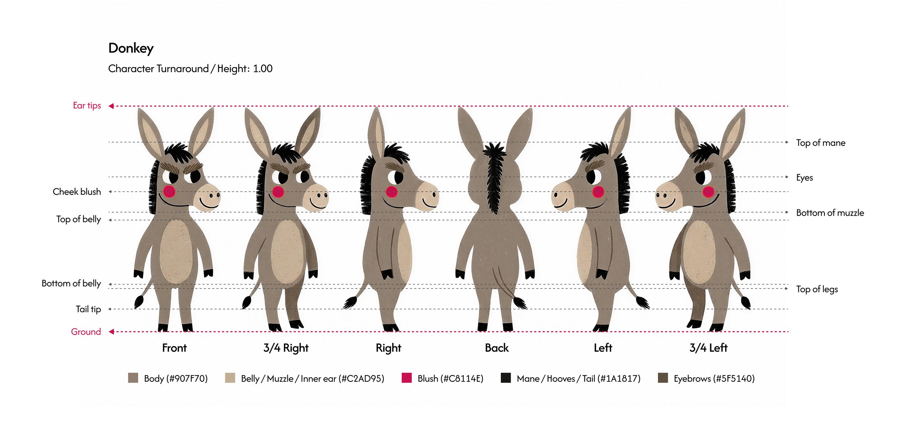
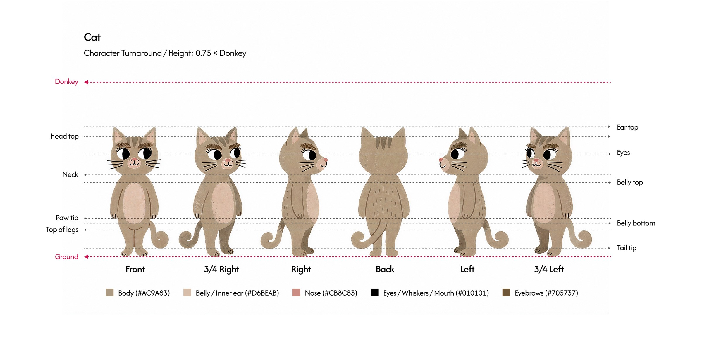
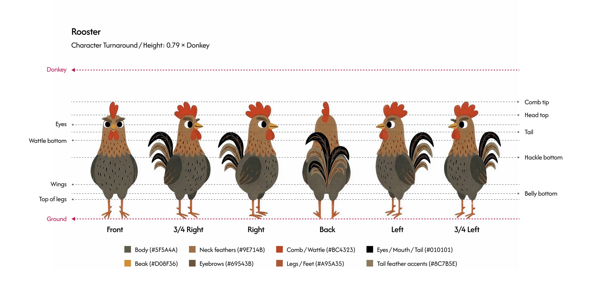
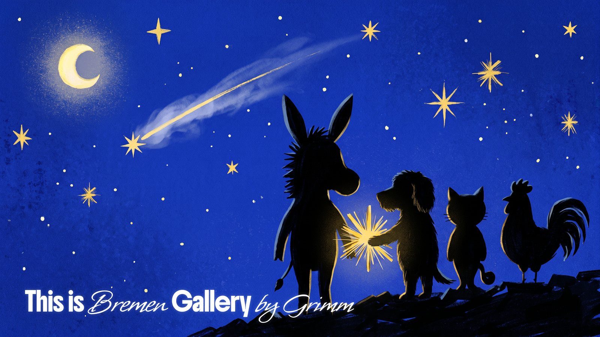

들고 있는 빛은 클로드입니다.
브랜드 설정 문서를 처음부터 읽고 응답해 설정을 잘 기억했고,
설정한 흐름을 검토하고 검증하는 데 탁월해
설계와 구현의 파트너로 선택했습니다.
다만 개별 작업은 빠르게 처리해도,
브랜드의 세계관과 전체 일관성은 아직 사람의 판단이 필요합니다.
작가가 먼저 점검하고 클로드가 한 번 더 검증하는 교차 점검으로 협업했으며,
설계와 판단은 디스이즈갤러리가, 구현과 연결은 AI가 맡았습니다.
| 단계 | AI가 한 것 | 부족했던 점 | 작가가 한 것 |
|---|---|---|---|
| 기획 · 브랜드 설정 | 브랜드 설정 문서를 처음부터 읽고, 작가가 짠 기획 흐름이 설정과 어긋나지 않는지 검토 의견 제시. 출처 검증 보조 (Claude). 사용해 본 다른 AI에 비해 설정을 잘 기억함 |
완벽하지는 않아, 앞 단계에서 정한 내용을 모두 정확히 이어 가지는 못함 | 리서치, 설문 설계와 분석, 브랜드 설정, 이야기 구성, 기획 흐름 정리. 검토 의견을 판단해 반영하고 출처 본문을 직접 확인 |
| 캐릭터 | 손그림 기반 디자인을 턴어라운드로 전개 (Runway) | 선, 비례, 눈높이, 꼬리 위치, 수탉의 볏 등 세부가 원래 디자인과 어긋남 | 손그림 → 종이 질감 → Photoshop, Illustrator로 다듬기 → 턴어라운드 생성 후 Photoshop에서 선, 비례, 눈높이, 꼬리 위치, 볏 등 전면 재조정 |
| 도구 비교 | 턴어라운드와 이미지 생성 시험 (GPT) | 턴어라운드 전개가 부정확하고 결과 편차가 커 일관성 유지가 어려움 | 비교 후 Runway 채택 |
| 데모 필름 | 장면 설명 정리 (Claude), 컷 영상화와 연결 (Runway) | 배경을 포함하면 캐릭터와 배경을 함께 인식하는 데 어려움을 겪음. 당나귀 기준으로 키 비례를 지정해도 생성할 때마다 네 동물의 키가 달라짐 |
스토리보드 21컷 구성, 레퍼런스 동작과 턴어라운드 준비, 컷 선별. 신별 캐릭터와 더 작은 컷 단위로 보완 예정 |
| 웹 구현 | Figma와 연결해 설계된 화면을 직접 읽고 코드로 구현. 코드 구조에 대한 이해도가 높음 (Claude) |
개별 작업은 빠르게 처리하나, 브랜드 세계관과 전체 일관성까지 스스로 유지하지는 못함 | Figma에서 정보 구조, 흐름, 화면 설계. 세계관과 일관성을 먼저 점검하고, 클로드가 한 번 더 검증하는 교차 점검으로 수정 |


